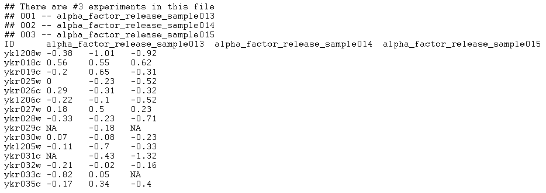

This is an example of an input file that the application will accept as a correctly formatted "RMAExpress, Tab-delimited " file type (only the first 20 lines of the file are shown):

Any number of comment lines, each one starting with a #, can precede the actual array data (however, no empty lines are allowed before, after or between comment lines). All comment lines will be ignored during file parsing. The beginning of the actual data is marked by the first row that does not begin with a # character. This row is expected to have N+1 tab-separated column names. The first column name can be anything (in the example above it has the value "ID"). The remaining N entries are assumed to be the names of the microarrays comprising the microarray set (in the example above the microarray names are "alpha_factor_release sample013", "alpha_factor_release_sample014" and "alpha_factor_release_sample015").
Subsequent lines contain the actual data. Each line corresponds to a single marker and consits of N+1 tab-separated entries. The first entry is the marker name (a string). The remaining N entries are real numbers providing the expression level of the marker at each of the microarrays in the set. A missing value or a non-real value results at a measurement being marked as "missing".